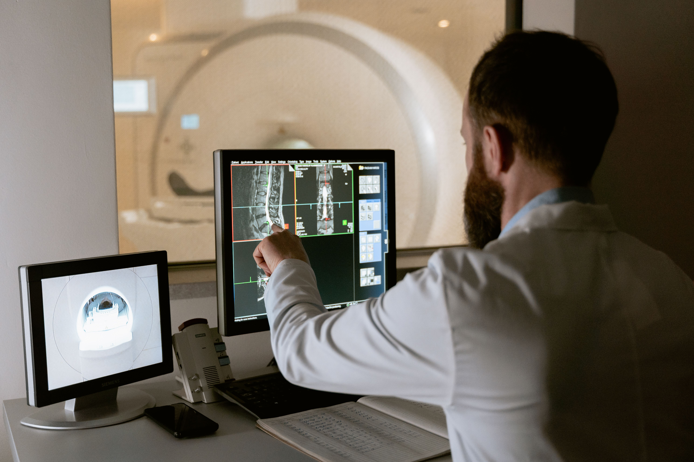

To become a radiologist, you must first complete a medical degree at a university. In New Zealand, this is typically a 6-year program that includes both classroom learning and clinical experience. After completing your degree, you will need to complete a residency program in radiology, which usually takes an additional 5-6 years.
During your residency, you will receive specialized training in various imaging techniques, such as X-rays, CT scans, MRI scans, and ultrasound. You will also gain experience in interpreting medical images and making diagnoses based on your findings.
University of Auckland: Offers medical imaging
Unitec: Offers a Bachelor of Science in Medical Imaging
For radiology the options best for this career is to take:
1. Maths
2. English
3. Chemistry
4. Biology
5. Physics
This aims for University Entrance credits.

- Medical school: 5-6 years for a medical degree
- General Hospital Experience: 1-2 years as a supervised junior doctor
- Specialist Radiology Training: 5 years of vocational registrar training
- Fellowship (optional): 1-2 years of further specialized training
(To become a Medical Imaging Technologist / Radiographer requires a 3 year Bachelors degree)
Radiologists are among the highest-paid medical specialists in New Zealand, reflecting their massive training requirements and diagnostic responsibilities:
- Trainees (Registrars): Typically start around $75,000 to $115,000+ per year depending on their rostered hours and overtime.
- Public Hospital Consultants: The base salary agreement ranges from about $198,000 to $282,000+ per year. However, once you add on-call allowances, overtime, and extra duties, total public salary usually ranges from $300,000 to over $450,000.
- Private Sector: Experienced diagnostic or interventional radiologists working in private clinics or partnerships can earn anywhere from $500,000 to $600,000+ per year.